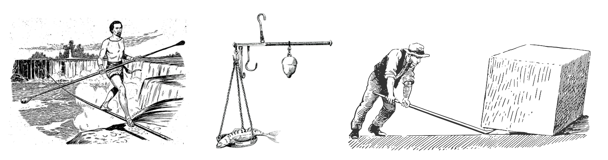
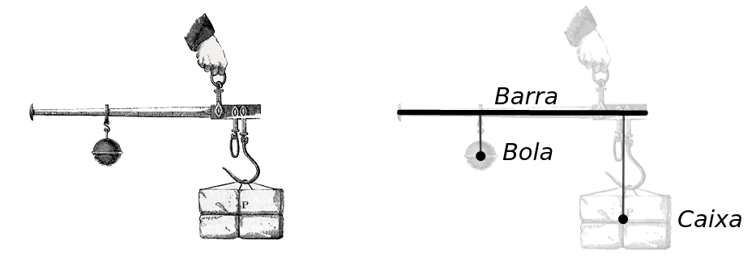
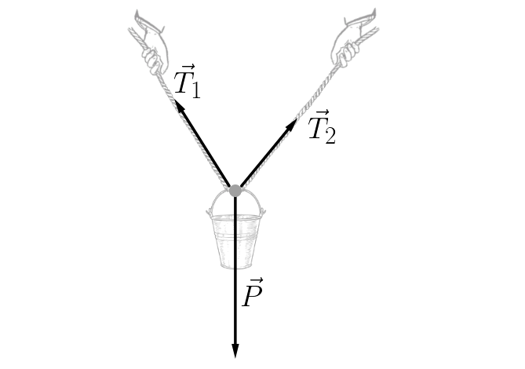
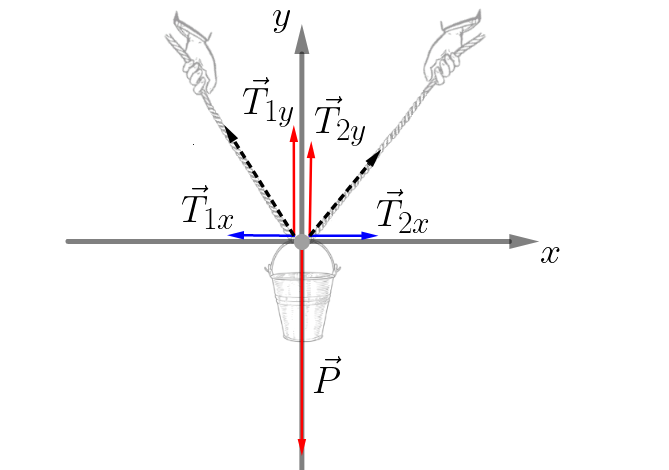
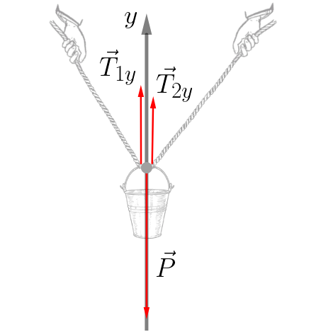
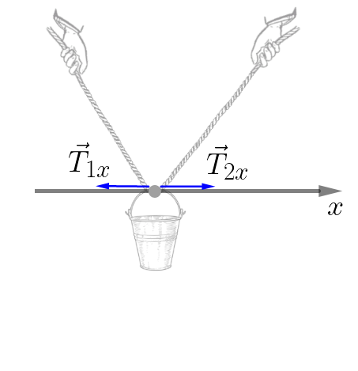
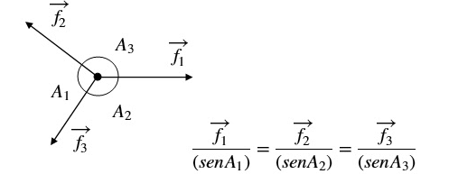

Aula4-30: Introdução à estática
A estática é a área da Física que estuda corpos em equilíbrio mecânico, isto é, situações em que não há aceleração translacional nem angular.

Ponto material e corpo extenso
Na resolução de problemas, podemos representar um corpo de duas maneiras, de acordo com a importância de suas dimensões:
-
Ponto material: representação de um corpo por um ponto. Ela pode ser usada quando as dimensões do corpo são desprezíveis para a análise do problema.
-
Corpo extenso: representação necessária quando as dimensões do corpo influenciam a análise e, portanto, não podem ser desprezadas.
Na imagem abaixo, uma bola e uma caixa estão em equilíbrio sobre uma balança romana. Para analisar as forças exercidas por esses objetos, suas dimensões não são relevantes; por isso, podemos representá-los como pontos materiais.
Com a barra ocorre o contrário: seu comprimento interfere no equilíbrio do sistema. Portanto, ela deve ser tratada como um corpo extenso.

Equilíbrio de um ponto material
Um ponto material está em equilíbrio quando a força resultante sobre ele é nula. Para verificar essa condição, podemos seguir os passos abaixo:
I. Represente a situação em um diagrama simplificado e desenhe todas as forças que atuam sobre o ponto material.

II. Escolha um sistema de referência conveniente. Em geral, eixos horizontal e vertical são uma boa opção. Em seguida, decomponha as forças e projete suas componentes nesses eixos.

III. Analise separadamente cada eixo. Para haver equilíbrio, a soma das componentes das forças em cada direção deve ser igual a zero.
EIXO Y

No eixo vertical, a soma dos módulos das forças para cima deve ser igual à soma dos módulos das forças para baixo:
EIXO X

No eixo horizontal, as componentes das forças em sentidos opostos devem ter o mesmo módulo:
Teorema das três forças
O teorema das três forças afirma que, se um corpo está em equilíbrio estático sob a ação exclusiva de três forças, suas linhas de ação são paralelas entre si ou concorrem em um mesmo ponto.
Teorema de Lamy
O teorema de Lamy é útil quando um ponto material está em equilíbrio sob a ação de três forças coplanares e concorrentes. Nesse caso, a razão entre o módulo de cada força e o seno do ângulo oposto a ela é constante.
